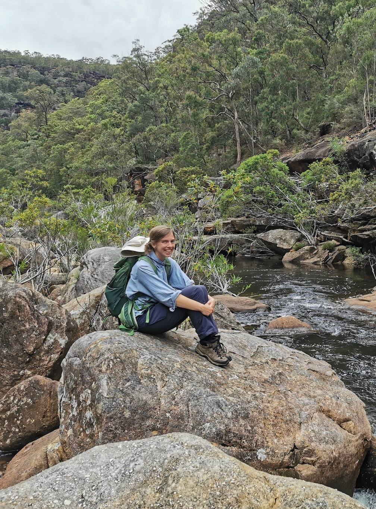
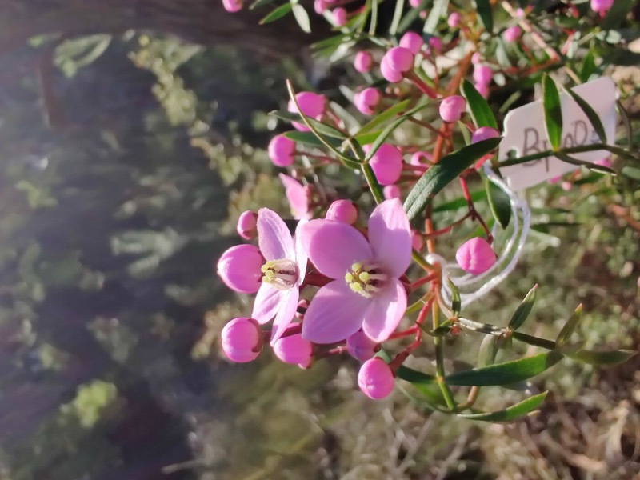
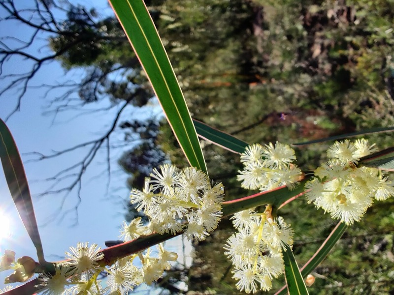
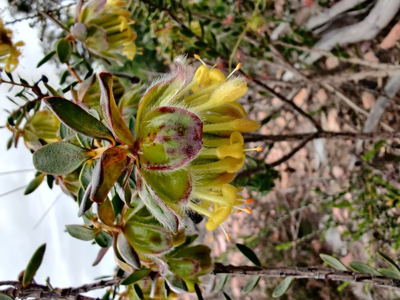
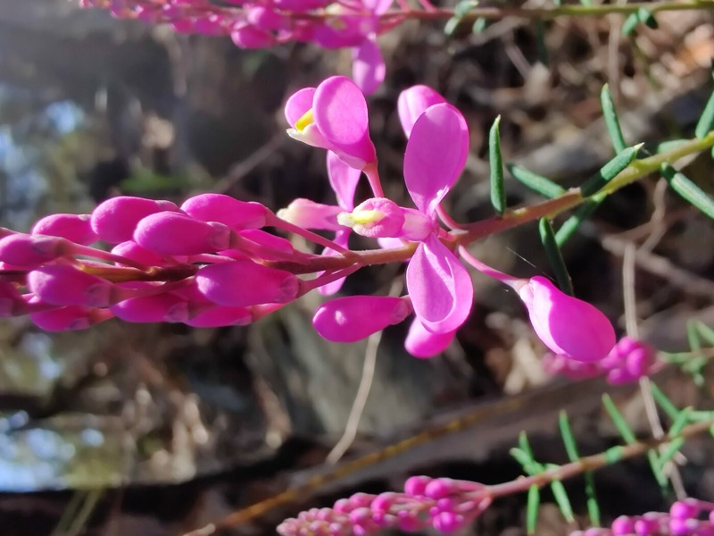
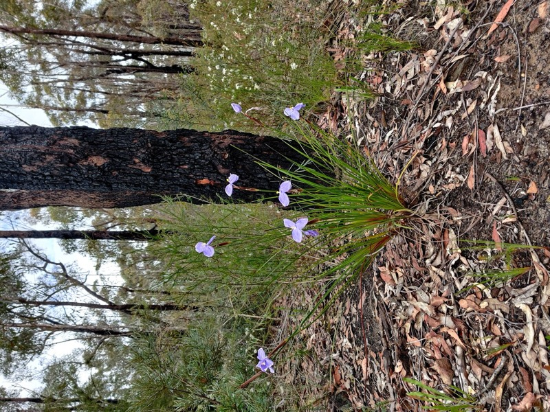
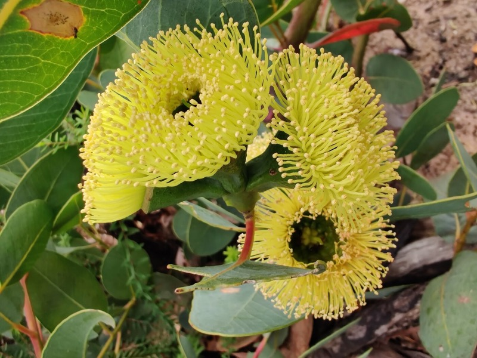
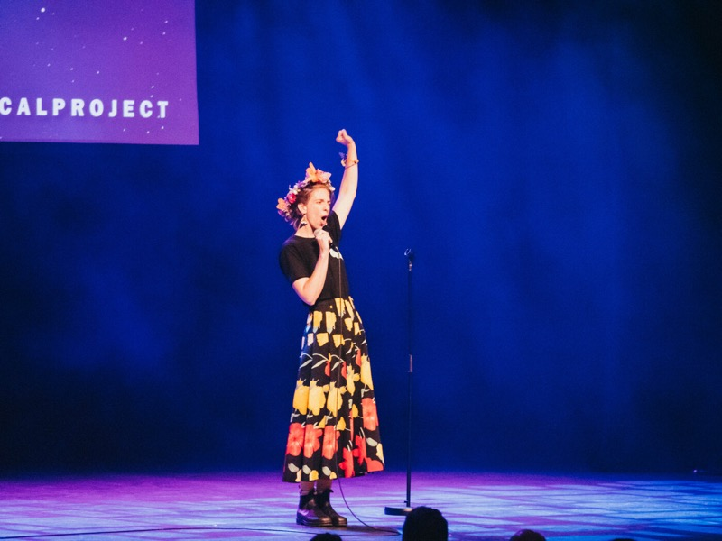
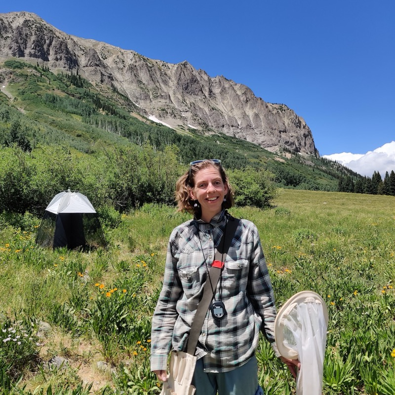

The real world (Wild Dogs, Blue Mountains)
June 2026
What is the real world? This is something I ponder sometimes when choosing between getting on top of emails or watching the Eastern Spinebills...

plants · bees · flowers · pollination · ecology · evolution · renewables
I am an Australian ecologist researching plants and their pollinators, from the birds and the bees to beetles and bats. My work combines rigorous data science and immersive field observation, and I believe science should be open, reproducible, and shared widely.
I live on Dharug land near Sydney. I bushwalk, garden, read, and write.
My diverse research interests span the ecology and evolution of plants and pollinators, and the conservation of native biodiversity. I like to test common assumptions with high-quality data and reproducible analyses, and ground-truth these tests in the field. See my full publication list and code on Google Scholar and GitHub.






I believe science should reach beyond journals. I write for rigorous peer-reviewed publications and also for general audiences, and am happy to share my science in the form of public talks, interviews and even science comedy performances.
June 2026
What is the real world? This is something I ponder sometimes when choosing between getting on top of emails or watching the Eastern Spinebills...
May 2026
A blog? Does anyone blog anymore?? Isn’t that incredibly outdated??? I hear you, dear loud-thinking reader. I hear you, but lately I’ve been thinking...

The STEAM Room, Enmore Theatre, Sydney Comedy Festival 2023 (photo: The STEAM Room)
Whether you're a research collaborator, a journalist or a prospective student, please feel free to reach out. I'm always happy to chat about ecology, science and the natural world.
| stephenseruby at gmail.com | |
| Scholar | Ruby E Stephens |
| GitHub | rubysaltbush |
| iNaturalist | rubyestephens |
| Ruby Stephens | |
| Bluesky | rubyecology |
| Hardcover | ruby_saltbush |

Sampling pollinator networks, Rocky Mountain Biological Laboratory, 2023 (photo: Annie Colgan)